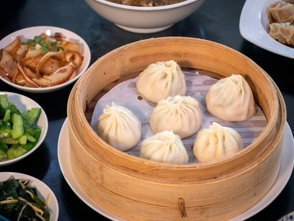
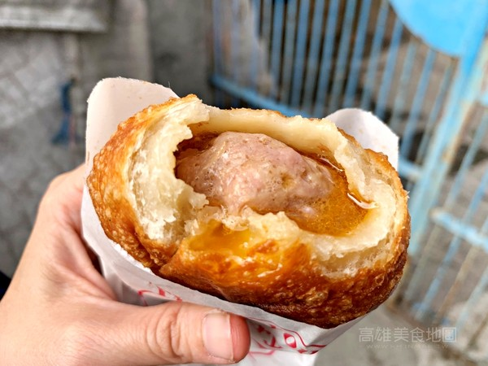

文字+圖片練習 學號:000000000 姓名:朱晉德
湯包
準備在鍋中放入蒸籠架，倒入200cc的水，
依序放好小籠湯包，再蓋上鍋蓋，
開大火蒸5分鐘，再轉中火蒸5分鐘，
香味飄出後，先試吃，看看皮有沒有熟，
小籠湯包麵皮一定要熟，QQ的才好吃！

餡餅
豬肉餡餅是許多人上麵食館都喜歡品嚐的經典美食，
隨著現在在家動手做料理風氣正夯，想到自己做出鮮美可口的餡餅料理，
享受烹飪後的成就感，不免讓人躍躍欲試。該如何做出飽滿多汁的餡餅呢？
本文將分享簡單易成功的餡餅料理作法，備好食材、按部就班，掌握爆汁秘訣，
你也能輕鬆在家包出一顆顆香氣四溢的美味餡餅。
